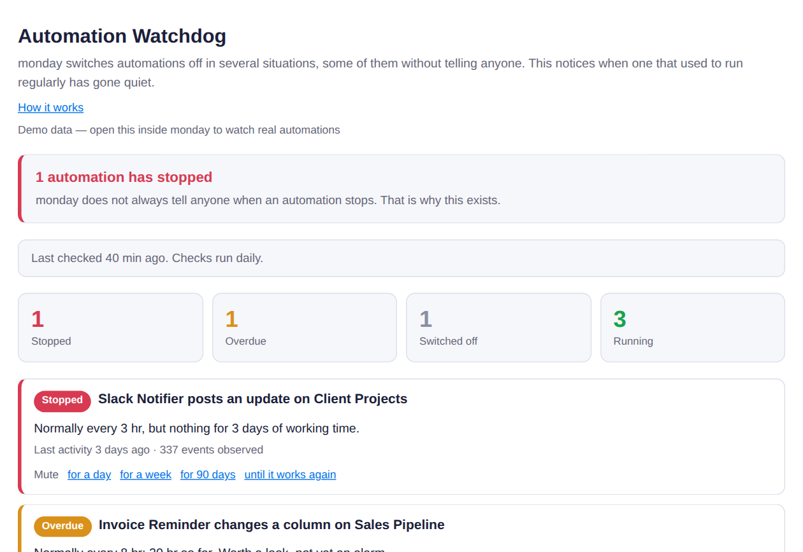
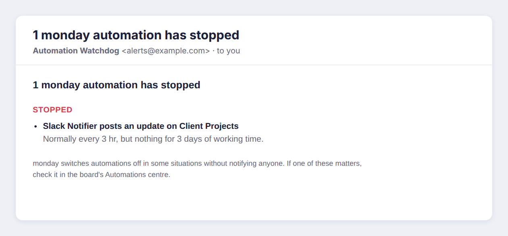

How to use Automation Watchdog
Automation Watchdog notices when a monday automation that used to act regularly has gone quiet, and emails you. monday switches automations off in several situations and, for some of them, tells no one.
Before you start
- You need to be an admin or a member of the monday account. Viewers cannot use the app, because monday does not let viewer accounts use its API.
- Your automations need a few weeks of history. The app learns each one's normal rhythm from the last 60 days of board activity.
- An automation has to act at least seven times in those 60 days, roughly weekly or more, before it can be watched.
- The app only reads. It never changes a board, an item or an automation.
Install and first use
- Install Automation Watchdog from the monday marketplace.
- Add it as a board view on any one board. It covers every board you can see, so one board is enough.
- The first time it opens, a short welcome page explains the statuses. Click Show my automations.
- The view reads the last 60 days of activity and lists every automation that repeats, with a status for each. A large account can take a minute; the view shows its progress while it reads.
- Click Set up email alerts. A new tab opens monday's authorization page. Approve the read-only access, and the page confirms where alerts will be sent.

The board view. Stopped automations come first, and every row says what its normal rhythm was.
What the statuses mean
| Status | Meaning | Email? |
|---|---|---|
| Stopped | Acted on a regular rhythm, and has been quiet far longer than its normal gap. | Yes |
| Overdue | Past its usual gap, but not yet long enough to call it stopped. | No |
| Switched off | Quiet for more than 30 days. Treated as retired on purpose rather than broken. | No |
| Running | Acting on its normal rhythm. | No |
Weekends and other days an automation never acts on are allowed for, so a quiet Saturday is not an alarm.
Email alerts
Once alerts are set up, a check runs once a day. You get one email when an automation stops, a reminder if it is still stopped three days later, and a note when it starts working again. You do not need to keep the board view open.

An alert email.
Muting an alert
If you already know about a stopped automation, mute it from its row: for a day, a week, 90 days, or until it works again. A mute never lasts forever, and every email says how many alerts are muted, so a mute cannot quietly become a blind spot.
What it cannot see
- An automation that acts too rarely to have a rhythm. Something that runs once a month will not be flagged when it stops.
- An automation that has never acted. With no history, there is nothing to compare against.
Your data
The app asks monday for read-only access: boards, users, your own profile and the account id. It reads board activity to learn rhythms, and does not read item names, column values, updates or files. The access token and the address alerts go to are kept in monday's encrypted secure storage, and are deleted when the app is uninstalled. The full privacy policy is linked on the app's marketplace listing.